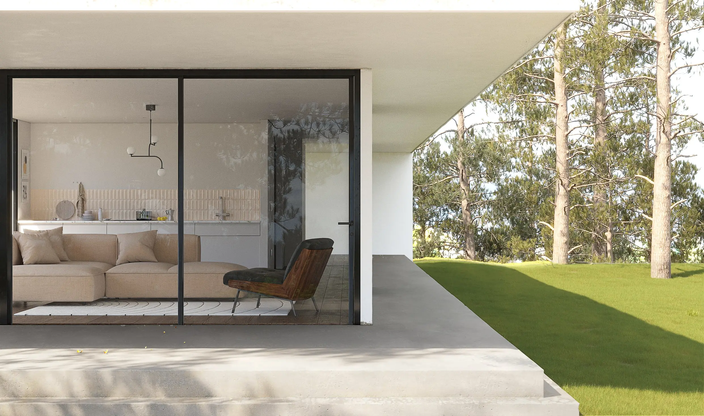
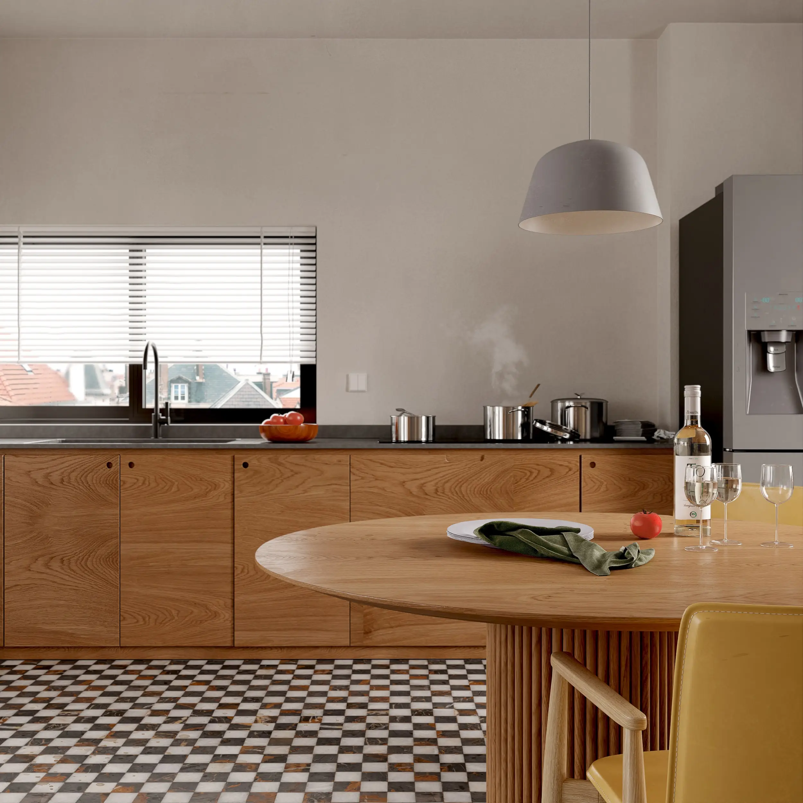
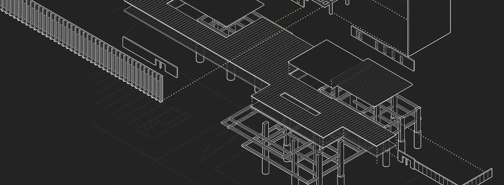

(company)
Stable
1. An architectural visualization studio specialized in interior and exterior computer generated imagery.
synonyms:
archviz, realism, BIM workflow, 3D studio, building modeling
Realism

Envision your project - interior and exterior - with high definition, ultra realistic renders. Choose materials and furniture and make well informed decisions before building or renovating.
GO TO PROJECT →
GO TO PROJECT →
Immersion

Stable's ultimate goal is for viewers to picture themselves habitating our creations. Realism alone is not enough, a space needs to feel lived and personal.
GO TO PROJECT →
GO TO PROJECT →
High quality models and textures

High poly, precise meshes and high quality textures are standard. Furniture models are sourced from the manufacturers to guarantee an identical representation of the real product.
GO TO PROJECT →
GO TO PROJECT →
Attention to detail
Attention to detail is paramount, it blurs the line between CGI and reality. From subtle surface imperfections to the accurate local flora, no detail is left unattended.
GET IN TOUCH →
GET IN TOUCH →
(method)
BIM workflow
1. An integration between architectural plans and 3d software to ensure accurate dimensions, details and updated renders.
synonyms:
fast-paced, scalable projects, simplified modeling, accuracy
Precision
The Revit - 3ds Max integration is key to a precise model creation while the BIM workflow ensures the model is always up to date throughout several revisions. Stable bridges highly technical architectural plans to realistic imagery.
GET IN TOUCH →
GET IN TOUCH →
Building modeling

From the ground up, a 3D version of the building, neighborhood and environment is modeled, giving our team freedom to compose the shot and our clients a better understanding of the space.
GET IN TOUCH →
GET IN TOUCH →
(feature)
Panoramas
1. A 360 degree interactive image surrounding the viewer for a better understanding of the space.
A panoramic view brings continuity and sense of space to an otherwise segmented representation. It instigates exploration and immersiveness.
GO TO PROJECT →
GO TO PROJECT →